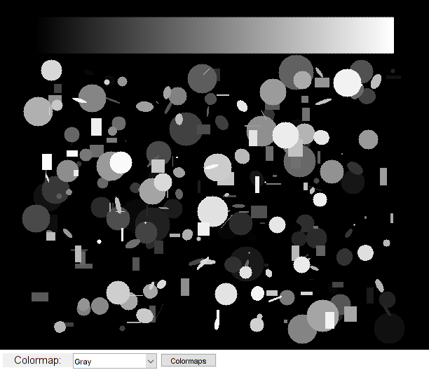

Colormap Demo
Sample shows how to apply false color on a grayscale image.
Sources:
function varargout = falsecolor_demo_gui(im) % load source image if nargin < 1 %{ if ~mexopencv.isOctave() S = load(which('penny.mat')); img = cv.resize(uint8(S.P), 4, 4); elseif true img = cv.normalize(peaks(500), ... 'Alpha',0, 'Beta',255, 'NormType','MinMax', 'DType','uint8'); else im = fullfile(mexopencv.root(), 'test', 'HappyFish.jpg'); img = cv.imread(im, 'Grayscale',true); end %} img = createRandomImage(); elseif ischar(im) img = cv.imread(im, 'Grayscale',true); else img = im; end % create the UI h = buildGUI(img); if nargout > 0, varargout{1} = h; end end function img = createRandomImage(thick, num) %CREATERANDOMIMAGE Creates image with random shapes if nargin < 1, thick = 2; end if nargin < 2, num = 256; end offsetx = 50; offsety = 25; lineLength = 50; img = zeros(500, 256*thick+100, 'uint8'); % random shapes for i=1:num center = [randi([offsetx, size(img,2) - offsetx]), ... randi([offsety*2 + lineLength, size(img,1) - offsety])]; sz = randi([1, min(offsetx, offsety)], [1 2]); opts = {'Color',mod(i,255)+1, 'Thickness','Filled'}; switch randi(3) case 1 radius = sz(1); img = cv.circle(img, center, radius, opts{:}); case 2 rc = cv.Rect.from2points(center - sz/2, center + sz/2); img = cv.rectangle(img, rc, opts{:}); case 3 ang = randi([0 180]); img = cv.ellipse(img, center, sz/2, 'Angle',ang, opts{:}); end end % colorbar for i=0:255 img = cv.line(img, [thick*i + offsetx, offsety], ... [thick*i + offsetx, offsety + lineLength], ... 'Color',i, 'Thickness',thick); end end function showColormaps(~,~,h) %SHOWCOLORMAPS Show all colormaps in one image cmaps = get(h.pop, 'String'); N = numel(cmaps); gray = repmat(uint8(0:255), 20, 1); out = cell(N,1); for i=1:N if strcmp(cmaps{i}, 'Gray') out{i} = cv.cvtColor(gray, 'GRAY2RGB'); elseif strcmp(cmaps{i}, 'Random') out{i} = cv.applyColorMap(gray, h.user); else out{i} = cv.applyColorMap(gray, cmaps{i}); end end out = cat(1, out{:}); figure, image(out) set(gca, 'YTick',(10:20:size(out,1))+0.5, 'YTickLabel',cmaps) end function onChange(~,~,h) %ONCHANGE Event handler for UI controls % apply colormap cmaps = get(h.pop, 'String'); idx = get(h.pop, 'Value'); if strcmp(cmaps{idx}, 'Gray') out = cv.cvtColor(h.gray, 'GRAY2RGB'); elseif strcmp(cmaps{idx}, 'Random') out = cv.applyColorMap(h.gray, h.user); else out = cv.applyColorMap(h.gray, cmaps{idx}); end % show result set(h.img, 'CData',out); drawnow; end function h = buildGUI(img) %BUILDGUI Creates the UI % params cmaps = {'Gray', 'Autumn', 'Bone', 'Cool', 'Hot', 'Ocean', 'Parula', ... 'Pink', 'Spring', 'Summer', 'Winter', 'Jet', 'Rainbow', 'HSV', ... 'Random'}; sz = size(img); % build the user interface (no resizing to keep it simple) h = struct(); h.gray = img; h.user = randi(255, [256 1 3], 'uint8'); % user-defined random colormap h.fig = figure('Name','Colormap Demo', ... 'NumberTitle','off', 'Menubar','none', 'Resize','off', ... 'Position',[200 200 sz(2) sz(1)+29]); if ~mexopencv.isOctave() %HACK: not implemented in Octave movegui(h.fig, 'center'); end h.ax = axes('Parent',h.fig, 'Units','pixels', 'Position',[1 30 sz(2) sz(1)]); if ~mexopencv.isOctave() h.img = imshow(img, 'Parent',h.ax); else %HACK: https://savannah.gnu.org/bugs/index.php?45473 axes(h.ax); h.img = imshow(img); end uicontrol('Parent',h.fig, 'Style','text', 'FontSize',11, ... 'Position',[5 5 100 20], 'String','Colormap:'); h.pop = uicontrol('Parent',h.fig, 'Style','popupmenu', ... 'Position',[105 5 120 20], 'String',cmaps); h.btn = uicontrol('Parent',h.fig, 'Style','pushbutton', ... 'Position',[230 5 80 20], 'String','Colormaps'); % hook event handlers opts = {'Interruptible','off', 'BusyAction','cancel'}; set(h.btn, 'Callback',{@showColormaps,h}, opts{:}); set(h.pop, 'Callback',{@onChange,h}, opts{:}); end